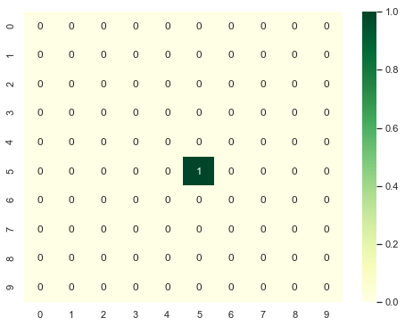
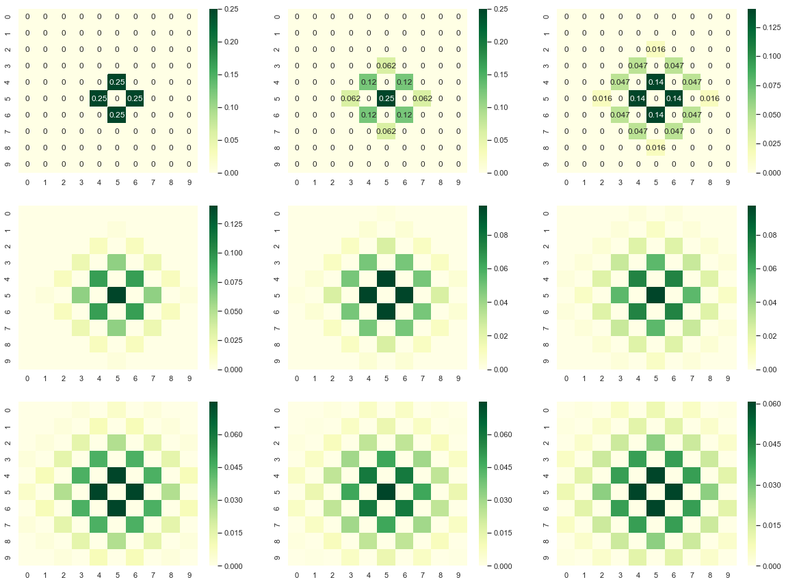
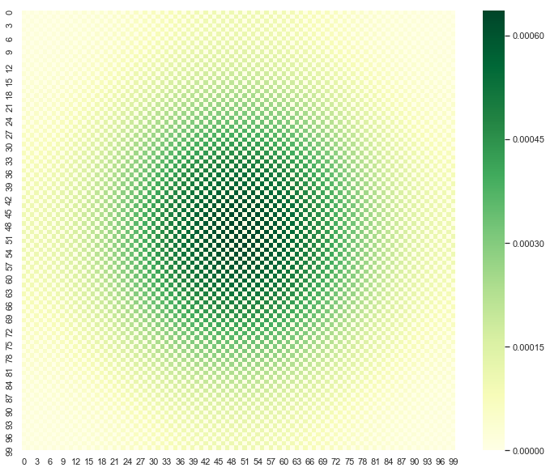
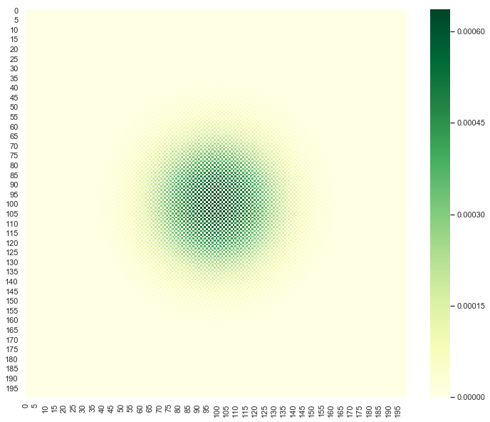

Diffusion Patterns
https://scipython.com/book/chapter-7-matplotlib/examples/the-two-dimensional-diffusion-equation/
import numpy as np import json import random as random import math as math import matplotlib.pyplot as plt import seaborn as sns sns.set()
Consider a 2D lattice of length L
L = 10
Create initial configuration:
We can use a vacant list to create initial configuration where initially particle is at middle of the lattice.
def start(L): '''create a vacant list of list ''' P = [[0 for i in range(L)]for j in range(L)] '''put particle at center''' P[int(L/2)][int(L/2)] = 1 return P
P =start(L)
P
[[0, 0, 0, 0, 0, 0, 0, 0, 0, 0], [0, 0, 0, 0, 0, 0, 0, 0, 0, 0], [0, 0, 0, 0, 0, 0, 0, 0, 0, 0], [0, 0, 0, 0, 0, 0, 0, 0, 0, 0], [0, 0, 0, 0, 0, 0, 0, 0, 0, 0], [0, 0, 0, 0, 0, 1, 0, 0, 0, 0], [0, 0, 0, 0, 0, 0, 0, 0, 0, 0], [0, 0, 0, 0, 0, 0, 0, 0, 0, 0], [0, 0, 0, 0, 0, 0, 0, 0, 0, 0], [0, 0, 0, 0, 0, 0, 0, 0, 0, 0]]
Make a plot of the lattice.
plt.figure(figsize = [8,6]) sns.heatmap(P,annot=True,cmap='YlGn')
<matplotlib.axes._subplots.AxesSubplot at 0x1a1dafde48>

Create a function to diffuse a particle:
$ P[i,j] = P[i+1,j] + P[i-1,j] + P[i,j+1] + P[i,j-1]$
def diffuse_primitive(P,L): '''create vacant list of list''' PP = [[0 for i in range(L)]for j in range(L)] for i in range(L): for j in range(L): '''diffuse one step''' PP[i][j] = P[i+1][j] + P[i-1][j] + P[i][j+1] + P[i][j-1] '''normalize''' PP = PP/np.sum(PP) return PP
L =10 P =start(L) #P = diffuse_primitive(P,L)
Set boundary conditons
- Lower limit
P[0-1,j] = P[L,j] P[I,0-1] = P[i,L]
- Upper Limit
P[L+1,j] = P[o,j] P[i,L+1] = P[i,0]
def diffuse(P,L): '''create vacant list of list''' PP = [[0 for i in range(L)]for j in range(L)] '''diffuse 1-step over supplied configuration''' for i in range(L): for j in range(L): '''set boundary condition at bottom and left''' ni =0; nj =0 if i==0:ni = L if j==0:nj = L '''add modulo to control boundary at top and right''' PP[i][j] = P[(i+1)%L][j] + P[(i-1) + ni][j]\ + P[i][(j+1)%L] + P[i][(j-1)+nj] '''normalize''' PP = PP/np.sum(PP) return PP
L =10 P =start(L) plt.figure(figsize = [20,15]) plt.subplot(3,3,1) P = diffuse(P,L) sns.heatmap(P,annot=True,cmap='YlGn') plt.subplot(3,3,2) P = diffuse(P,L) sns.heatmap(P,annot=True,cmap='YlGn') plt.subplot(3,3,3) P = diffuse(P,L) sns.heatmap(P,annot=True,cmap='YlGn') plt.subplot(3,3,4) P = diffuse(P,L) sns.heatmap(P,annot=False,cmap='YlGn') plt.subplot(3,3,5) P = diffuse(P,L) sns.heatmap(P,annot=False,cmap='YlGn') plt.subplot(3,3,6) P = diffuse(P,L) sns.heatmap(P,annot=False,cmap='YlGn') plt.subplot(3,3,7) P = diffuse(P,L) sns.heatmap(P,annot=False,cmap='YlGn') plt.subplot(3,3,8) P = diffuse(P,L) sns.heatmap(P,annot=False,cmap='YlGn') plt.subplot(3,3,9) P = diffuse(P,L) sns.heatmap(P,annot=False,cmap='YlGn') plt.savefig('plot/diffuse-step.pdf') plt.show()

Run the diffusion step with desire no of running steps
def run_diffuse(P,nrun,L): run = 0 '''diffuse N times''' while run < nrun: P = diffuse(P,L) run = run+1 return P
We can make a plot of arbitraty diffusion step by selecting "irun" in function runner.
'''set parameters''' L = 100 ; nrun = 1000 ; P = start(L) '''run diffusion''' P = run_diffuse(P,nrun,L)
plt.figure(figsize = [12,10]) sns.heatmap(P,annot=False,cmap='YlGn') plt.savefig('plot/diffuse.pdf') plt.show()

Much Finner
L = 200 nrun = 1000 P = start(L) '''run diffusion''' P = run_diffuse(P,nrun,L)
plt.figure(figsize = [12,10]) sns.heatmap(P,annot=False,cmap='YlGn') plt.savefig('plot/diffuse-finner.pdf') plt.show()
